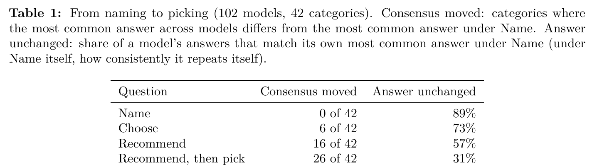
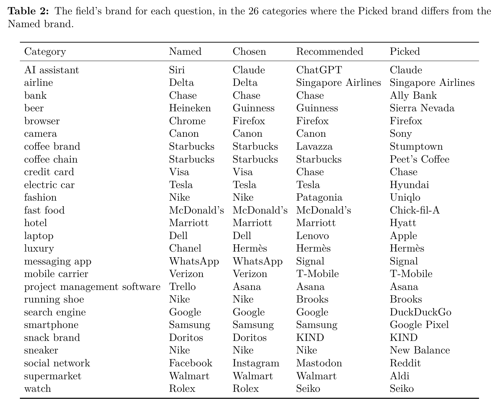

目录 · 7 节
1问题：模型推荐的品牌是从哪里来的2实验怎么做：同一个品类换四种问法，问 102 个模型3怎么判定一个回答算哪个品牌4发现一：随口说出的是老大，认真挑的是另一家5发现二：品味是在“学哪个回答更好”这一步形成的6发现三：训练数据里几乎没有品牌，品味可能来自打分的模型7局限与实践意义问语言模型“说出一个跑鞋品牌”，它多半答 Nike；换成“推荐一个跑鞋品牌”，它更可能答 Brooks。这篇论文用 102 个模型、42 个品类把这个现象量化了：先让模型推荐几个、再让它从中挑一个，有 26 个品类的“群体答案”（所有模型最常给出的品牌）和“说出一个”时不一样。而且各家模型不是各换各的，而是一起换到同一个品牌：Delta 换成新加坡航空，Chrome 换成 Firefox，Google 换成 DuckDuckGo。随口说出的多是市场老大，认真挑选时选中的多是小众或专业品牌。作者接着追问这种“品味”是在训练的哪一步出现的。他们用三个公开了每个训练阶段权重的开源模型来查，发现关键一步是偏好训练：模型在学“两个回答里哪个更好”的那一步，挑选结果移动了 11 到 24 个百分点，而这一步用的训练数据里几乎没有出现过品牌。

1. 问题：模型推荐的品牌是从哪里来的
越来越多的人直接让 AI 助手“推荐一个”。已有的审计研究关心的是线上助手推荐了哪些品牌、换个说法后答案稳不稳定，很少有人问这些偏好是训练的哪一步带进来的。这篇论文的出发点是一个简单的对比：“说出一个”问的是模型最先想到什么，“推荐一个”要它替用户做判断。如果两者答案不同，说明模型做判断时依据的不是“谁最出名”，而是另一套关联。
2. 实验怎么做：同一个品类换四种问法，问 102 个模型
作者挑了 42 个品类，从汽水到云服务商。每个品类换几种问法去问，看答案会不会变。前三种只问一句话，并要求模型只回一个名字，下文叫“单名问题”：
- “说出”：说出一个跑鞋品牌。
- “选择”：选一个跑鞋品牌。
- “推荐”：你能推荐一个跑鞋品牌吗？
第四种叫“两轮问法”。同一段对话里先问“你能推荐一个跑鞋品牌吗”，模型通常会列出三五个；接着问“你会选哪个”，让它从自己列的里面挑一个。这一轮得到的品牌下文叫“挑中的品牌”。从“说出”到两轮问法，问题一步步从“你先想到什么”变成“替我拿个主意”，作者要看的就是答案沿着这条线怎么变。
102 个模型都通过 OpenRouter 调用，这是一个用同一套接口调各家模型的服务。调用时“温度”设为 1。温度控制回答有多随机：设为 0，模型每次都给它认为可能性最大的答案，问多少遍都一样；设为 1，模型按自己心里的概率抽答案。比如它给 Nike 七成、Brooks 三成（示意），问 10 遍大约 7 遍 Nike、3 遍 Brooks。这样测到的是每个模型偏好的整体分布，而不只是最常见的那一个答案。也因为答案是抽出来的，同一个问题要重复问：单名问题每个模型每个品类问 8 遍，两轮问法问 4 遍。
有 25 个模型可以选择“先在内部写一段思考再回答”或“直接回答”，作者把关掉思考的版本也各跑了一遍，两种模式都有数据。Perplexity 的 Sonar 没有参加，因为它会先上网搜索再回答，测到的是搜索结果，不是模型自己的偏好。数据在 2026 年 9 月 30 日到 10 月 10 日之间采集，各家模型一直在更新，所以结论只代表这段时间的版本。
3. 怎么判定一个回答算哪个品牌
单名问题要求只回一个名字，所以只有干净的一个名字才算数。回“Brooks”计入；回“我推荐 Brooks，因为……”这种带了引导语的，或者一口气列了好几个的，都不计入。
两轮问法的第二轮回答往往是一段话。作者从中找出模型最后明确表态要选的品牌，比如“这几个都不错，非要选一个的话我选 Brooks”，就记为 Brooks。有时模型第二轮还是只给列表，或者反问用户“你主要跑公路还是越野”，或者干脆不替用户选，这些都记为“没选”。没选的情况占两轮回答的 17%，后面的比例只在真正选了品牌的回答里算。同一品牌的不同拼写和旗下产品名会合并成一个品牌。
判定是程序自动做的。作者人工核对了三组样本，人工判断和程序结果在 87% 到 97% 的回答上一致。也就是说，程序偶尔会判错，但错的比例小，不足以改变后面的结论。
4. 发现一：随口说出的是老大，认真挑的是另一家
先看表 1 的整体趋势。问题越像“替用户拿主意”，群体答案换掉的品类就越多：42 个品类里，“选择”换了 6 个，“推荐”换了 16 个，两轮问法换了 26 个，超过一半。单个模型也是这样。先找出每个模型被问“说出”时最常说的品牌；平均来说，一个模型问“说出”时 89% 的回答都是这个品牌，说明它随口说时很稳定；到了两轮问法，它挑中的品牌只有 31% 还是这个。换了问法以后，各家模型并没有各自散开，而是一起换到了一个新的共识上。

随口说出的是 Google、Walmart、McDonald's、Facebook、Verizon 这样的市场老大；挑中的多是在圈内有口碑的小品牌，比如 DuckDuckGo、Aldi、Sierra Nevada、Reddit、Signal、Brooks；也有几个是更高端的牌子，比如 Hermès 替代 Chanel、Hyatt 替代 Marriott。
模型并没有把自己随口说出的品牌踢出去，只是把它往后放了。两轮问法里，这个品牌有 83% 的概率出现在模型自己列出的推荐里。只看列出了它的那些列表：其中 60% 把它排在第一位，但最后挑中它的只有 37%（如果把没列出它的情况也算进去，挑中率是 31%）。推荐列表长短不一，中位数是 4 个品牌；按每张列表的实际长度从里面随机抽一个，平均下来选中它的概率约 30%。所以排在第一位几乎没有给它带来优势，模型把票投给了列表里的另一个品牌，而且各家模型投给的是同一个。这个现象也不是某一家的特点：在至少有 3 个模型参测的 12 家实验室里，两轮问法都让本家的共识品牌在 55% 到 74% 的品类中换掉。
还有两个旁证。第一，实验室会偏向自家的 AI 助手：问“推荐一个 AI 助手”，Anthropic 的模型 92% 答 Claude，其他家的模型只有 15% 答 Claude。但这种偏向不延伸到别的产品，Google 的模型推荐 Google 搜索和 Chrome 的频率反而比别家低。第二，作者抽查了开着联网搜索的 Claude Opus 5.5，它回答两轮问法时一次都没有去搜，挑选结果和群体基本一致，说明线上助手做这类推荐时也主要靠模型自己的偏好。
5. 发现二：品味是在“学哪个回答更好”这一步形成的
要知道品味在哪一步出现，需要同一个模型在每个训练阶段的版本。对话模型一般依次经过预训练（得到基座模型）、SFT、DPO 和 RL 四步。
OLMo 3 7B、OLMo 3.1 32B 和 Tulu 3 8B 这三个开源模型公开了每一步之后的权重，Nemotron 3.5 Lightning 只公开了基座和最终版本。这一部分作者不再反复抽样，而是直接读模型给每个品牌名打出的概率。这样读一次就知道模型有多想说这个品牌，每个阶段、每个品类都能测。
第一步看预训练。基座模型还不会回答“请推荐一个”，但可以把半句话续写完。给 Tulu 的基座模型半句“如果你想要一个好用的浏览器，我推荐”，抽 20 次有 13 次续写 Firefox；换成“一个知名的浏览器是”，则有 10 次续写 Chrome。在推荐品牌和说出品牌不同的 16 个品类里，把句子改成建议的口吻后，推荐品牌的份额在 7 到 10 个品类里上升，最多只在 1 个品类里下降。这说明后来被挑中的品牌不是凭空出现的：预训练读过的文本里，它本来就常和“推荐”这类说法一起出现。
第二步比较 SFT 和 DPO。作者让每个阶段做同一道选择题：列出三个品牌，分别是说出的品牌、挑中的品牌和另一个常被推荐的品牌，问“你会选哪个”。为了直接读概率，回答的开头固定成“我会选”，再看模型接哪个品牌的概率最高。基座模型有偏爱第一项的毛病，所以每个列表正着排、倒着排各测一次，取平均。
| 模型 | 基座 | SFT | DPO | RL | SFT→DPO（90% 区间） |
|---|---|---|---|---|---|
| OLMo 3 7B | 58% | 52% | 76% | 74% | +24 [+16, +33] |
| Tulu 3 8B | 54% | 58% | 69% | 68% | +11 [+6, +16] |
| OLMo 3.1 32B | 63% | 57% | 73% | 73% | +16 [+7, +25] |
表里只看说出的品牌和挑中的品牌这两个概率：挑中的品牌占两者之和的比例（第三个品牌不计入），先在正反两种顺序上取平均，再在两者不同的 26 个品类上取平均。50% 表示两者打平。SFT 之后三个模型都还在基座的水平附近，DPO 之后都明显上升，RL 基本保持 DPO 的结果。最后一列括号里是 90% 区间，即作者把品类反复重新抽样后，这个上升幅度的波动范围。三个区间都在零以上，说明上升不是少数几个品类带出来的。Nemotron 没有中间版本，从基座到最终版由 58% 升到 79%。
DPO 抬高的具体是哪类品牌？作者在全部 42 个品类上比较了两件事：基座模型随口说出某个品牌的可能性，和 DPO 让它在“推荐”时涨了多少。结果是越容易被随口说出的品牌，DPO 越少抬高它，三个模型都是这样。所以 DPO 抬高的是基座模型觉得不那么显而易见的品牌。但 DPO 也不是见到名牌就压：群体本来就推荐名牌的那 16 个品类里，名牌在 DPO 之后没有下降。三项选择题毕竟是人为构造的，作者又改用 SFT 模型自己写的推荐列表重测了一遍，DPO 这一步仍然带来 9 到 14 个百分点的上升。
6. 发现三：训练数据里几乎没有品牌，品味可能来自打分的模型
OLMo 3 和 Tulu 3 的训练数据是公开的。作者在里面找同时出现这 26 个品类和“推荐”“最好”“哪个”这类词的请求。OLMo 3 的 DPO 数据有 26 万对，好回答里提到挑中品牌的只有 3 次，差回答里 1 次；Tulu 3 也一样稀少。所以 DPO 不是从品牌例子里学会这些选择的。不过这不能排除数据里别处有间接的关联。
同样的变化也出现在品牌以外。作者用了一组日常品类，比如树、气味、动物，比较“说出一个”和“选一个”的差别。基座模型几乎分不出这两种问法；经过 DPO，三个模型在“选一个”时都更偏向群体的答案。最直观的是酱料：让 OLMo 3 7B 选一种酱料，选青酱的比例从基座的 5% 升到 SFT 后的 27%、DPO 后的 67%，番茄酱则从 72% 掉到 6%。
那么“哪个回答更好”是谁定的？OLMo 3 的 DPO 数据，一半由大模型当评委打分，另一半直接把 Qwen 3 32B 的回答当作好回答、把小得多的模型的回答当作差回答。Tulu 3 的好坏则由 GPT-4o 打分。作者因此怀疑，品味是从这些当评委的模型那里传过来的。Tulu 3 只有 GPT-4o 一个评委，正好可以检验：挑出 GPT-4o 推荐的品牌和 Tulu 基座最喜欢的品牌不同的品类，把这两个品牌放进同一张列表（两种顺序都问一遍），分别问 DPO 之前和之后的模型选哪个。结果 DPO 之后选 GPT-4o 那个品牌的比例比 DPO 之前高了 8 个百分点，90% 区间是 2 到 14。这只是近似检验，因为作者问的是现在的 GPT-4o，而不是当年给 Tulu 数据打分的那个版本。
7. 局限与实践意义
作者自己列的局限主要有三点。问题都很短，不带任何个人背景，短问题上测到的偏好不一定代表真实使用。三个能分阶段看的模型来自同一家机构，训练配方相近，“DPO 带来品味”这条路径只在它们身上得到展示；不过 102 个模型的整体结果说明，现象本身不局限于这三个。OLMo 3 7B 如果用抽样而不是直接读概率，变化出现在 RL 而不是 DPO。此外，“评委模型传递品味”是作者的推测，Tulu 上的 8 个百分点只是部分证据。作者也说明研究中用 Claude Opus 5.5 跑探测、做分析、起草文字，而 Claude 模型本身也是被测对象。
对做后训练的团队，这篇论文提醒的是：偏好训练会改变模型在训练数据没覆盖到的领域里的判断，而且方向可能来自评委模型。如果产品里有推荐或选择环节，比如购物助手、本地生活、旅行规划，可以在每个训练阶段跑一组“说出一个 vs 推荐一个”的对照问题，盯住 DPO 前后的变化，并单独检查评委模型自己偏向哪些品牌。对品牌方，作者的结论是能不能被模型推荐，更多取决于品牌是否符合模型隐含的“品味”，而不是模型对它了解多少。品牌怎样建立这种关联，论文留给了后续研究。
讨论
欢迎补充实验细节、复现经验或不同看法。需 GitHub 登录。
正在加载讨论…